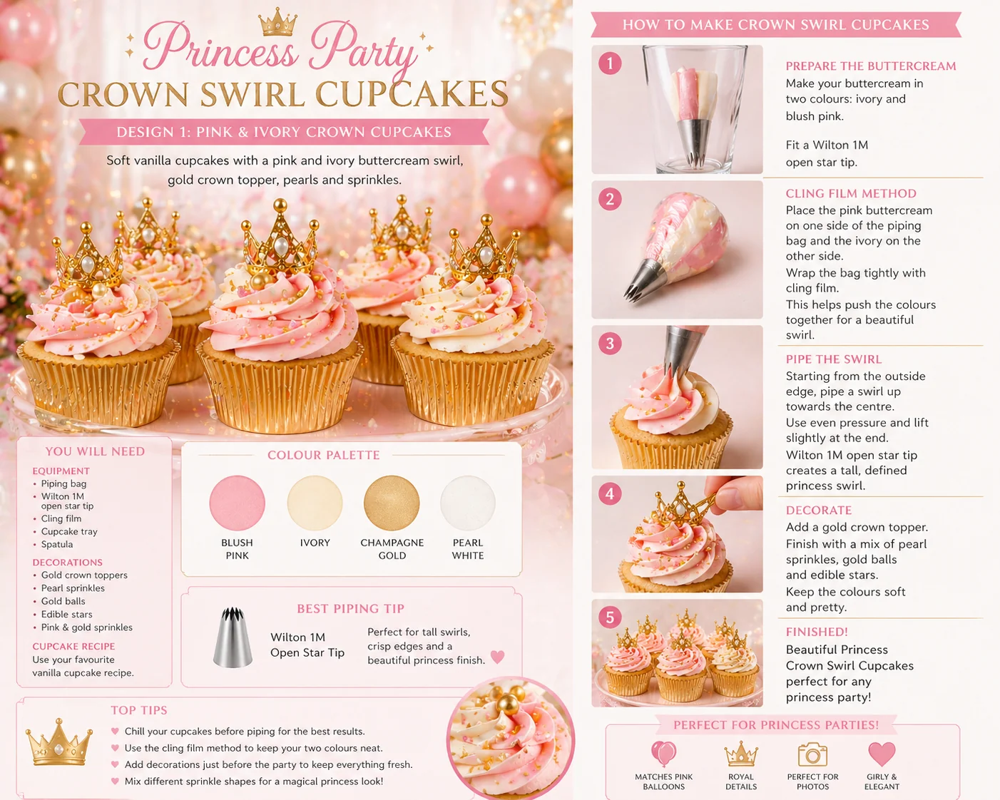
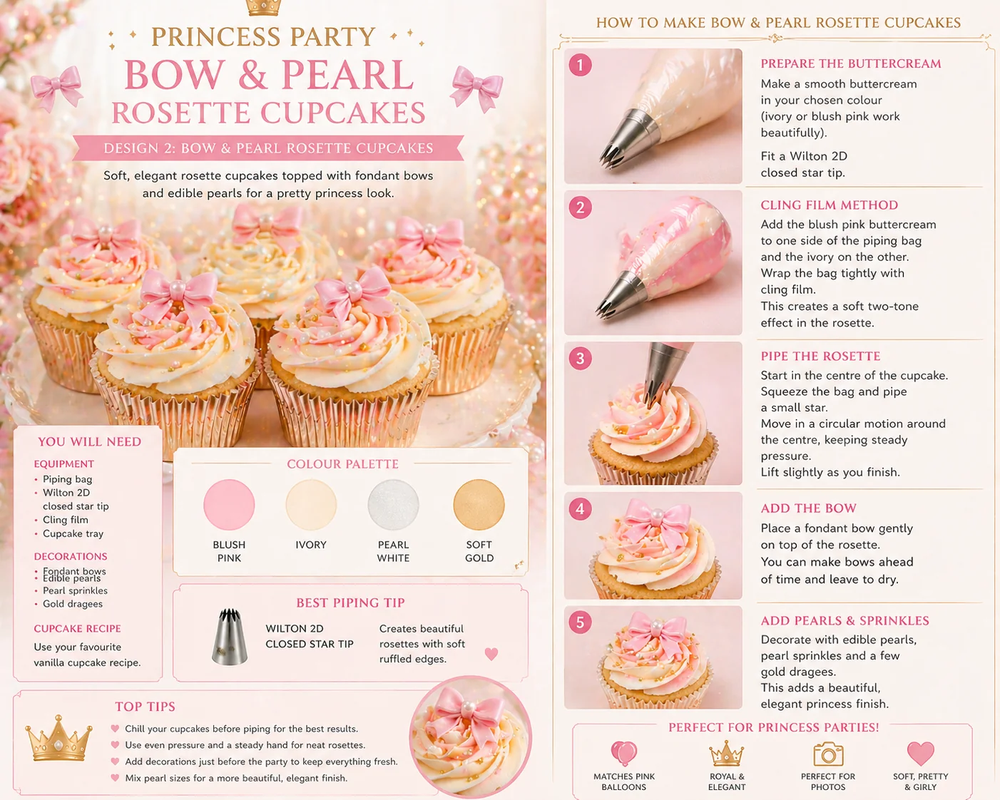

Princess cupcakes are a beautiful way to add colour, sparkle and themed detail to a birthday dessert table. With soft pink buttercream, ivory swirls, gold crowns, bows and edible pearls, they can make a party table feel instantly more magical.
At Little Moment Studio, our focus is birthday balloon styling and celebration setups. We do not make cakes or cupcakes ourselves, but cupcakes are often part of a beautifully styled party table and knowing how they should look helps us plan the whole display. These princess cupcake ideas are designed as inspiration for a birthday dessert table that can work beautifully alongside balloons, backdrops, cake stands and party styling.
If you would like cupcakes or a cake to match your balloon display, we are happy to recommend a trusted local cake maker.
This guide covers two easy princess cupcake designs:
- Crown Swirl Cupcakes
- Bow & Pearl Rosette Cupcakes
Why These Two Designs Work Together
These two designs are a strong combination because they create two different effects from the same colour palette. The crown swirl adds height, sparkle and an obvious royal feel. The bow rosette is softer and more elegant. Together on a dessert table, they give a mix of impact and delicacy that suits a princess theme well.
| Design | Style | Difficulty | Best For |
|---|---|---|---|
| Crown Swirl Cupcake | Tall, sparkly and royal | Easy | Main princess cupcake display |
| Bow & Pearl Rosette | Soft, pretty and elegant | Easy | Softer detail alongside the swirls |
Both work well with princess party dessert tables and can be made the day before the party for convenience.
Princess Cupcake Colour Palettes
Choosing the colour palette before beginning makes everything else easier. For these two designs, the most useful base palette is blush pink, ivory, champagne gold and pearl white. This combination works beautifully with pink, ivory and gold balloon garlands and suits most princess party themes.
| Style | Colours |
|---|---|
| Classic princess | Blush pink, ivory, champagne gold |
| Royal pink | Pink, pearl white, gold |
| Fairytale lilac | Lilac, blush, ivory, soft gold |
| Bow princess | Soft pink, ivory, pearl white |
| Luxury princess | Ivory, champagne, pearl, gold |
| Floral princess | Blush, ivory, soft green, rose pink |
Crown Swirl Cupcakes

Crown swirl cupcakes are the classic princess party cupcake. They use a tall pink and ivory buttercream swirl finished with a small gold crown topper, pearl sprinkles and gold details. This design gives height, sparkle and an immediately recognisable princess feel that works on any party table.
What You Will Need
| Item | Purpose |
|---|---|
| Vanilla cupcakes | Cupcake base |
| Buttercream | For the swirl |
| Blush pink gel colour | Colours the pink buttercream |
| Plain ivory buttercream | Contrast colour for the two-tone swirl |
| Cling film | For the two-colour swirl method |
| Piping bag | Holds the buttercream |
| Wilton 1M open star tip | Creates the tall princess swirl |
| Gold crown toppers | Main princess decoration |
| Pearl sprinkles | Elegant finish |
| Gold sprinkles or dragées | Adds sparkle |
| Cupcake cases | Pink, ivory or gold cases work best |
Best Piping Tip for Crown Swirl Cupcakes
Use a Wilton 1M open star tip. This creates a tall, defined swirl with soft ridges and a full, impressive finish. It holds a crown topper well and shows the two-colour pink and ivory buttercream clearly. Start at the outside edge, spiral inwards and upwards, and finish with a small peak on top.
Best Method: Cling Film Two-Colour Swirl
For this design, use the cling film method. Place blush pink buttercream and ivory buttercream side by side on a sheet of cling film, roll them into a log, then place the log inside your piping bag with the cut end facing the tip. This gives a cleaner two-colour swirl with more defined pink and ivory sections than mixing the two colours by hand.
How to Make Crown Swirl Cupcakes
- Bake and cool the cupcakes. Allow them to cool completely before decorating. Warm cupcakes will soften the buttercream and cause the swirl to lose its shape.
- Colour the buttercream. Divide the buttercream into two bowls. Leave one bowl ivory or plain vanilla. Colour the second bowl with a small amount of blush pink gel colour. Start with a small amount, mix well, and let it rest for a few minutes — pink can deepen slightly as it sits.
- Prepare the cling film. Lay a large piece of cling film flat on your work surface. Add a line of pink buttercream and a line of ivory buttercream side by side, keeping both colours similar in thickness so the swirl looks balanced.
- Roll into a buttercream log. Roll the cling film around the buttercream to form a log. Twist both ends to secure. Snip one end so the buttercream can come through the piping tip.
- Load the piping bag. Fit a piping bag with a Wilton 1M open star tip. Place the buttercream log inside with the cut end facing down towards the tip. Push the buttercream gently down until it reaches the nozzle.
- Pipe the swirl. Hold the piping bag upright over the cupcake. Start at the outside edge and pipe around in a circle. Continue inwards and upwards to build height. Stop squeezing before lifting the bag away to finish with a neat peak.
- Add the crown topper. Place a small gold crown topper on top of the swirl. Press gently so it sits securely without flattening the buttercream.
- Add pearls and gold details. Finish with edible pearl sprinkles, gold dragées or small edible stars. Add them while the buttercream is still soft so they adhere properly.
| Colour | Use |
|---|---|
| Blush pink | Main buttercream colour |
| Ivory | Contrast buttercream colour |
| Champagne gold | Crown topper and sprinkles |
| Pearl white | Sprinkle detail |
Bow & Pearl Rosette Cupcakes

Bow and pearl rosette cupcakes are softer and more elegant than the crown swirl design. Instead of a tall swirl, they use a flatter rosette finish with a fondant bow and pearl sprinkles. This design is perfect for a pink bow princess table or a softer, more delicate royal display.
What You Will Need
| Item | Purpose |
|---|---|
| Vanilla cupcakes | Cupcake base |
| Smooth buttercream | For the rosette |
| Blush pink gel colour | Optional pink tint |
| Ivory buttercream | Soft contrast for two-tone rosette |
| Cling film | Optional for two-tone finish |
| Piping bag | Holds the buttercream |
| Wilton 2D closed star tip | Creates the rosette |
| Fondant bows | Main princess decoration |
| Edible pearls | Elegant sprinkle finish |
| Gold dragées or sprinkles | Small sparkle detail |
| Cupcake cases | Pink, ivory or gold cases |
Best Piping Tip for Bow & Pearl Rosettes
Use a Wilton 2D closed star tip. This creates a soft, ruffled rosette with a flatter, more floral finish than the 1M — which makes it ideal for placing a fondant bow on top. Start in the centre and spiral outwards towards the edge of the cupcake to create the rosette shape.
How to Make Bow & Pearl Rosette Cupcakes
- Bake and cool the cupcakes. Cool cupcakes hold their shape better and keep the bow topper stable.
- Prepare the buttercream. Make a smooth buttercream in ivory or blush pink. For a two-tone rosette, use the cling film method with blush pink and ivory. For a simpler design, use one colour and add the bow and pearls as the main detail.
- Fit the piping bag. Fit a piping bag with a Wilton 2D closed star tip. Fill the bag with buttercream. If using the cling film method, place the log inside with the cut end facing the tip.
- Pipe the rosette. Hold the piping bag upright over the centre of the cupcake. Start in the centre and pipe a small curl, then continue spiralling outwards towards the edge. Stop squeezing before lifting the tip away so the end looks neat. The rosette should be flatter than a swirl — this gives the bow topper a stable surface.
- Add the fondant bow. Place a small fondant bow gently on top of the rosette. Do not press too firmly or the rosette will lose its shape. For the most consistent bows, use a small silicone bow mould.
- Add pearls and gold details. Finish with edible pearls, pearl sprinkles and a few gold dragées while the buttercream is still soft.
| Colour | Use |
|---|---|
| Blush pink | Fondant bow and optional buttercream tint |
| Ivory | Main rosette buttercream colour |
| Pearl white | Pearl sprinkles and soft accents |
| Soft gold | Small dragée details |
Crown Swirl vs Bow Rosette
Both designs use the same colour palette but create different effects. The crown swirl is taller, bolder and more dramatic. The bow rosette is softer, flatter and more delicate. Together on a dessert table, they give visual variety without breaking the colour story.
| Design | Look | Best For |
|---|---|---|
| Crown Swirl Cupcake | Tall, sparkly, royal | Main princess cupcake design |
| Bow & Pearl Rosette | Soft, pretty, elegant | Softer detail alongside the swirls |
Box of 12:
| Quantity | Design |
|---|---|
| 6 | Crown Swirl Cupcakes |
| 6 | Bow & Pearl Rosette Cupcakes |
Box of 6:
| Quantity | Design |
|---|---|
| 3 | Crown Swirl Cupcakes |
| 3 | Bow & Pearl Rosette Cupcakes |
Where to Source Princess Cupcake Toppers
Princess cupcake decorations can be made by hand, pressed with silicone moulds, or bought as ready-made toppers. Here is what to look for.
Crown toppers
For crown swirl cupcakes, look for gold crown cupcake toppers, mini crown cake toppers, edible crown cupcake toppers, fondant crown moulds or princess crown silicone moulds. Check the size carefully — some crown toppers are designed for cakes rather than cupcakes, and can be too large. For cupcakes, smaller toppers usually sit better.
Bow toppers
For bow rosette cupcakes, look for small fondant bow moulds, pink bow cupcake toppers, edible bow cake decorations or mini fondant bow silicone moulds. Small bow moulds are particularly useful because they produce repeatable decorations that look neat across a full tray of cupcakes.
Pearl and gold decorations
Good finishing decorations include edible pearl sprinkles, gold dragées, champagne sprinkles, edible gold stars and pink and gold sprinkle mixes. Before buying any topper or decoration, check whether it is edible or decorative only, whether it is food-safe and suitable for children, and whether it contains wires, skewers or sticks. Remove any non-edible supports before serving.
Matching Princess Cupcakes with Balloons
Princess cupcakes work best when they repeat the colours of the balloon display. The cupcakes do not need to be identical to the balloons — they just need to use the same colour family so the whole table feels connected rather than assembled from separate decisions.
| Balloon Colours | Cupcake Idea |
|---|---|
| Pink, ivory and gold | Pink and ivory crown swirl cupcakes with gold crown toppers |
| Blush and champagne | Bow rosette cupcakes with pearl sprinkles |
| Lilac, blush and ivory | Lilac rosettes with gold crown details |
| Pearl white and gold | Ivory cupcakes with gold toppers and pearls |
| Pink and floral green | Floral princess cupcakes with crown or bow toppers |
For a full guide to pairing cupcakes with balloon displays, see how to match cupcakes with your balloon display. For piping tip guidance, see the best piping tips for cupcakes.
Beginner Tips for Better Results
- Keep buttercream firm. If the swirl or rosette loses shape, chill the buttercream for 10–15 minutes before continuing.
- Use gel colour, not liquid. Gel colour gives a stronger, truer pink without making the buttercream too soft.
- Keep the rosette flat. For the bow rosette, keep the piping flat and low — the topper needs a stable surface to sit on.
- Add decorations while soft. Pearl sprinkles and gold dragées stick best when the buttercream is freshly piped.
- Check box height before packing. Crown toppers and fondant bows add height. Some standard cupcake boxes are not tall enough.
- Make toppers ahead. Fondant bows benefit from being made the day before so they firm up slightly, which makes them easier to place.
Your Questions Answered
Can you make princess cupcakes the day before?
Yes. Store them in a covered cupcake box in a cool, dry place. Fondant bows and crown toppers benefit from being made ahead as they firm up slightly. Keep fondant away from humidity as it can become sticky.
How do you transport princess cupcakes with tall toppers?
Use a cupcake box with inserts to prevent movement. Check the lid height — crown toppers add significant height and some standard boxes are too shallow. If toppers are delicate, add them after transport. Keep cupcakes away from direct sun and heat.
What if the buttercream is too soft to hold the swirl?
Chill the buttercream in the bowl for 10–15 minutes, then beat briefly before refilling the piping bag. In a warm kitchen this can happen quickly — work in small batches and return the bag to the fridge between rounds if needed.
What if the bow topper sinks into the rosette?
Let the rosette firm for a few minutes before placing the bow. Lightweight fondant moulds are also easier to work with than larger, heavier toppers. The rosette is a naturally flatter surface, so it is more forgiving than a tall swirl.
Complete the Princess Party Look
Princess cupcakes are one part of a beautiful birthday table. To make the whole setup feel coordinated, match them with the balloon display, backdrop and table details.
A complete princess dessert table could include a crown birthday cake, these two cupcake designs, cake pops, crown cookies, heart cookies and sweet jars — all in the same blush pink, ivory and gold palette. For full table inspiration, see our princess party dessert table ideas guide.
For more birthday cupcake designs, see our birthday cupcake ideas and fondant cupcake ideas guides. For dessert table layout tips, see how to style a dessert table for a children’s party.
At Little Moment Studio, we can help create the balloon garland, backdrop and colour palette for your princess party. We are also happy to recommend a trusted local cake maker if you would like cupcakes or a cake to complement your balloon display.
Planning a Princess Party in Kent?
Little Moment Studio creates balloon garlands, backdrops and birthday displays across Sittingbourne and Kent. We can also recommend a trusted local cake maker to complete the table.